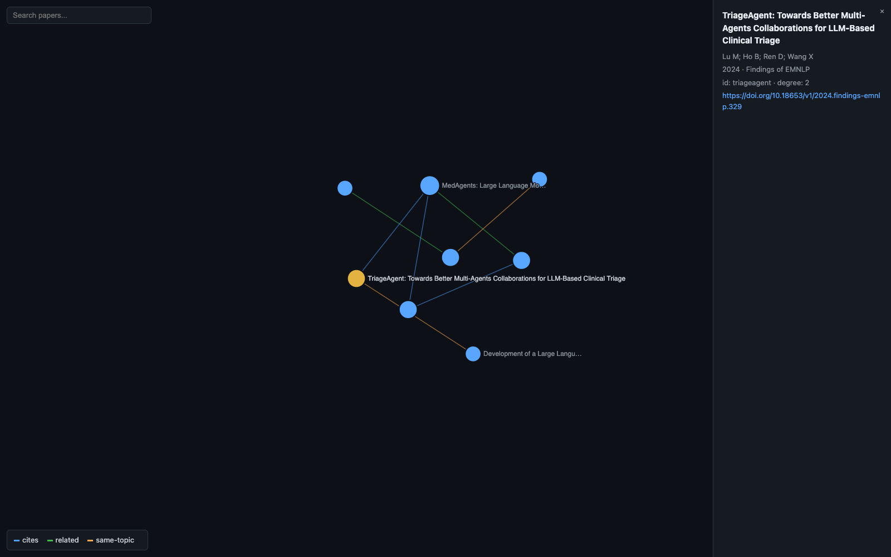

An unedited demo of research-harness's browser UI,
research web, over a real scoping review. Real data, real views, no staged replay — and nothing is
sent to the agent: every action button only fills the chat box.
She is reviewing how teams of LLM agents support clinical decisions. One command opens the agent in her
browser on 127.0.0.1, beside everything it has written for the review: she checks where things
stand, triages the reading list, reads the synthesis and checks one claim against its sources, explores how
her papers connect in the graph, and ends on the PRISMA diagram for her methods section.
Make active fills in the switch, and Restore previous draft brings back the plan she had half-typed.Ctrl/⌘+B folds it away.1 full text ready · Screen full texts), state chips with counts, the five title/abstract exclusions with their rationale, ↑/↓ through records, search, and an included paper's verdicts, abstract and PDF.[n] citation to its reference and back, then select one sentence and Check claim hands it to the agent with the file and project named.
One self-contained HTML file: vanilla-JS force-directed canvas, node size by degree, edge colours by type,
search, drag/zoom/pan, click for metadata. No external assets — it works from file://.

application/octet-stream, so a committed MP4 cannot be watched in place.
GitHub Pages serves it as real video/mp4, so it plays here at full quality.